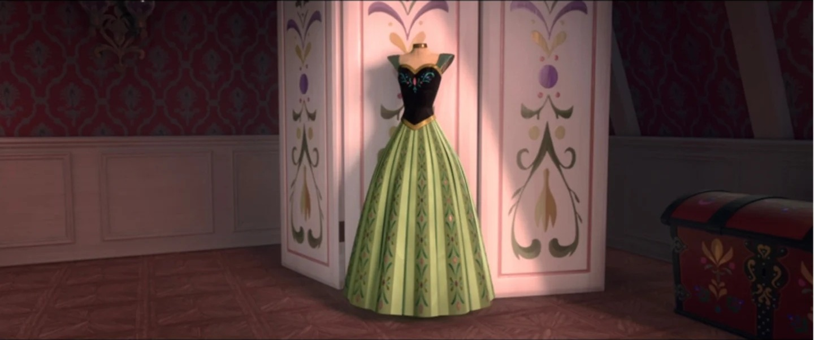

🎵 歌曲 · F1 歌曲
Love Is an Open Door
F1 歌曲
安娜与汉斯对唱 · 时长 2:07
📖 Love Is an Open Door
安娜与汉斯对唱 · 时长 2:07
一、歌曲基本信息
演唱者
Kristen Bell & Santino Fontana（安娜 & 汉斯）
词曲作者
Kristen Anderson-Lopez & Robert Lopez
《Love is an Open Door》是《冰雪奇缘 (Frozen, 2013)》中的经典歌曲，由Kristen Anderson-Lopez 与 Robert Lopez 创作。这首歌在电影中承担着重要的叙事功能，是角色情感表达和剧情推进的关键节点。（来源：迪士尼官方 / Frozen原声带）
二、完整歌词（中英对照 · 逐句交互 · 播放高亮）
🎵
Love is an Open Door
Kristen Bell & Santino Fontana（安娜 & 汉斯）
▶
VERSE 1 · 主歌一 · 安娜与汉斯
Okay, can I just say something crazy?
好吧，我能说件疯狂的事吗？
💡 点击查看逐句考据
好的，我能说些疯狂的话吗？汉斯在舞会上主动接近安娜，用疯狂的话作为开场白。这显示了他的浪漫和冒险精神，也为后面的反转埋下伏笔——他的每一句话都是精心设计的。
💡 点击查看逐句考据
我喜欢疯狂！安娜的回应，显示她的天真和活泼。她被汉斯的浪漫吸引，立刻回应了他的热情——她不知道的是，这份疯狂背后是汉斯的阴谋。
All my life has been a series of doors in my face
我的一生就是一扇扇在我面前关上的门
💡 点击查看逐句考据
我的一生就是一连串被当面关上的门，汉斯讲述自己的经历。作为 13 个王子中的最小一个，他一直被忽视，感觉人生处处碰壁——这是他真实的感受，也是他接近安娜的真正原因。
And then suddenly I bump into you...
然后突然我撞见了你……
💡 点击查看逐句考据
然后突然我遇到了你，汉斯的偶遇其实是精心策划的。他在舞会上主动接近安娜，假装是偶然相遇——他的每一步都有目的，安娜却以为是命运的安排。
I was thinking the same thing, 'cause like...
我也正这么想，因为……
💡 点击查看逐句考据
汉斯与安娜几乎同时说出同感。安娜把这当成“天作之合”的铁证，观众却早已明了，她遇上的是一个投其所好的猎手——相同的热切里，盛着两种截然不同的真心。
I've been searching my whole life to find my own place
我一生都在寻找属于自己的位置
💡 点击查看逐句考据
我一生都在寻觅属于自己的位置——安娜把多年的孤独与不被理解，全部浓缩成这一句。她以为终于找到“自己人”和“自己的位置”，却不知这位置不过是汉斯搭的纸糊舞台。它的真实处境，是刚到能拥有位置，就被拽进更深的失落。
And maybe it's the party talking or the chocolate fondue...
也许是派对气氛或巧克力火锅作祟……
💡 点击查看逐句考据
安娜被眼前的甜蜜冲昏头，甚至半推半就地替“心动”找借口：也许是派对气氛，也许是巧克力火锅的醉意。这份自我调侃，恰恰透出她太渴望相信爱，才会用玩笑为即将到来的沉沦壮胆。
💡 点击查看逐句考据
但和你在一起，汉斯开始表白。他用浪漫的语言让安娜相信他们是天生一对——这句话，既是表演，也是他真实的想法：和安娜在一起，他就能获得他想要的一切。
💡 点击查看逐句考据
但和你在一起，汉斯开始表白。他用浪漫的语言让安娜相信他们是天生一对——这句话，既是表演，也是他真实的想法：和安娜在一起，他就能获得他想要的一切。
I found my place...
我找到了我的位置……
💡 点击查看逐句考据
安娜宣布“我找到了我的位置”——她把一段匆匆相识，当成了自己命运坐标的锚点。她以为终于有人懂她、照亮她的孤独，却不知道这个“位置”，不过是汉斯为骗取信任而凭空搭起的舞台。
PRE-CHORUS · 预副歌 · 安娜与汉斯
I see your face...
我看见你的脸……
💡 点击查看逐句考据
我看到你的脸，汉斯看着安娜的脸，假装深情。实际上，他在评估安娜的天真和易操纵性——她的脸越天真，他的计划就越容易成功。
And it's nothing like I've ever known before!
这与我所知的任何事物都不同！
💡 点击查看逐句考据
这和我以前经历的完全不同，汉斯说和安娜在一起的感觉前所未有。这是他的浪漫话术，让安娜相信他们的爱情是独一无二的——实际上，这只是他表演过的无数次之一。
CHORUS 1 · 副歌 · 安娜与汉斯
Love is an open door!
爱是一扇敞开的门！
💡 点击查看逐句考据
爱是一扇敞开的门（第一遍）。安娜与汉斯一拍即合地合唱，这是他们“天生一对”错觉狂欢的起点。同是这句颂歌，此刻是安娜孤寂心门被叩响的狂喜——她结婚了，却也正走向悬崖边缘。
Love is an open door!
爱是一扇敞开的门！
💡 点击查看逐句考据
爱是一扇敞开的门（第二遍）。两个人夸张地同向挥舞手臂，几乎要步入婚姻的快车道。越是整齐的默契，越显出这扇“门”不过是虚设的幻象，悲剧正藏在这完美的合拍里。
Love is an open door!
爱是一扇敞开的门！
💡 点击查看逐句考据
爱是一扇敞开的门（第三遍）。旋律翻高冲刺，安娜彻底沦陷于“遇见知音”的眩晕。她以为爱情像推开一扇门一样简单——而观众从汉斯一闪而过的冷眼里，已瞥见那扇门背后是深不见底的黑暗。
💡 点击查看逐句考据
和你在一起！（第一遍）安娜与他同声高呼，仿佛找到世间另一个自己。这个短句寄托她的全部热望：与一个“懂我”的人相守，孤独从此终结。表演越投入，反讽越锋利。
💡 点击查看逐句考据
和你在一起！（第二遍）两人像排练过一般异口同声，节奏的咬合增添“天生一对”的错觉。但配合越默契，日后真相越惨烈——汉斯只是把台词背得熟。
💡 点击查看逐句考据
和你在一起！（第三遍）安娜的嗓音几乎笑出来，她真的相信这辈子只会唱给这一个人。此刻的甜蜜越是具体，她稍后独自被锁进塔楼的寒潮就越刺骨。
💡 点击查看逐句考据
和你在一起！（第四遍）她把他视作结束寂寞的钥匙，把“一起”想象成万花筒般的美好未来。她全然不知，这句誓言的口吻与对象，都将在几小时后被彻底颠覆。
Love is an open door...
爱是一扇敞开的门……
💡 点击查看逐句考据
爱是一扇敞开的门……（Bridge 转句）省略号把狂欢稍稍放缓，安娜借这句自嘲地调侃自己的心扉——它曾被封死太久，如今他一来就打开了。这个省略号像她在迎接那扇门的瞬间。
VERSE 2 · 主歌二 · 安娜与汉斯
I mean it's crazy...
我是说，这太疯狂了……
💡 点击查看逐句考据
我是说这太疯狂了，安娜说他们的爱情来得太快太疯狂。但她的天真让她相信这种疯狂就是真爱——她没有意识到，真正的爱情不会来得这么快，这么完美。
💡 点击查看逐句考据
什么？，汉斯假装没听清，让安娜重复她的话。这是他操纵技巧的一部分，让安娜更加投入——她以为他在认真听，实际上他在引导她走向求婚。
We finish each other's —
我们总是心有灵犀——
💡 点击查看逐句考据
“我们总能接完对方的话——”安娜陶醉于这份心有灵犀。妙的是她说出这话时，两人确实一句接一句、严丝合缝——但这份合拍只是她误认的爱情信号，也为后面的“默契竟是圈套”埋下伏笔。
💡 点击查看逐句考据
三明治！，汉斯接话，但他接错了——安娜想说的是 sentences（句子），他说成了 sandwiches（三明治）。这个细节显示他并不真正了解安娜，只是在表演——但安娜的天真让她以为这是心有灵犀。
That's what I was gonna say!
我正要说这个！
💡 点击查看逐句考据
我正想说这个！，安娜的天真让她相信汉斯真的和她心有灵犀。她没有意识到汉斯接错了，反而觉得他们很合拍——这个细节，是全曲最讽刺的地方。
I've never met someone —
我从未遇见过谁——
💡 点击查看逐句考据
我从没遇到过这样一个人——安娜逮住此刻“与其搭”的默契，欣喜地宣布自己遇见了知音。妙就妙在她与汉斯说出同样的话，而观众已看得出这不过是一场彼此将错就错的错觉——相同的句子里，藏着两个各怀心机的“恋人”。
Who thinks so much like me!
和我想得这么像！
💡 点击查看逐句考据
安娜惊呼有人“和我想得如此相似”。她把这当作命中注定的证明，却未曾察觉，相似不过是对方精心包装的迎合——她对“被理解”的极度渴望，让她轻易就把相似当成了爱。
VERSE 3 · 主歌三 · 安娜与汉斯
Jinx! Jinx again!
默契！又默契了！
💡 点击查看逐句考据
“默契！又默契了！”安娜孩子气地喊出这声玩笑，眼底满是遇见同类的惊喜。此刻她的世界天真得近乎透明——她尚不知道，这份“默契”会把她的满怀热望，带向一场彻骨的清醒。
Our mental synchronization
我们的心灵同步
💡 点击查看逐句考据
我们的精神同步，汉斯用正式的词汇描述他们的默契。实际上，这是他精心设计的表演——他在引导安娜的想法，让她以为他们在同步思考，实际上是他在控制她的思考方向。
Can have but one explanation
只有一种解释
💡 点击查看逐句考据
只能有一个解释，汉斯说他们的默契只能用一个解释——命运。这是他的浪漫话术，让安娜相信他们的相遇是命中注定——实际上，这只是他精心策划的结果。
💡 点击查看逐句考据
你——（停顿）这是“你我同出一语”双人句的起拍：安娜与汉斯节奏交错地分唱“你—”“我—”最终合拢成“原本就是一对”。这一连串咬合得严丝合缝的“半句话”，正是爱情错觉的开始——它把默契当成了真，也为日后的幻灭打出最响亮的一记伏笔。
💡 点击查看逐句考据
“而我——”双人合唱的中段接口，安娜与汉斯分唱半句、彼此续接。这种严丝合缝的句式本身，就是她对“灵魂伴侣”深信不疑的直观写照——她把自己交出去，交给一个她以为能接住她半句话的人。
💡 点击查看逐句考据
“注定——”仍是半句交错。安娜越顺着对方的话往下接，越显出她被“天作之合”的幻象层层包裹——每半句的严丝合缝，都让后来的幻灭更加响亮。
💡 点击查看逐句考据
“就是——”近乎忘形的前奏音节。安娜连音调都与汉斯咬合在同一个频率上，仿佛两人真的共用一颗心。这份过分契合的“刚刚好”，恰恰是最危险的甜蜜假象。
💡 点击查看逐句考据
“天生一对！”两人异口同声的高呼，把整首歌推向定情的高潮。安娜把这四个字当作人生的答案，却不知道这答案建立在层层错认之上——她坚信的“注定”，其实只是三分钟的误会。
BRIDGE · 桥段 · 安娜与汉斯
💡 点击查看逐句考据
说再见……（第一遍）汉斯提议向孤独告别，安娜欣然应和。这句“再见”的对象，是彼此独居已久的旧我——它真挚得足以骗过安娜，也骗过了她自己：她要告别的，正是那个尚能清醒识人辨伪的自己。
💡 点击查看逐句考据
说再见……（第二遍）合唱升高，两人一同向旧日挥别。安娜把“再见孤独”当作对新生活的拥抱，却把那扇隐忍许久的门彻底关上——她不计入的，将是随之而来的漫长黑夜。
To the pain of the past
向过去的痛苦告别
💡 点击查看逐句考据
向过去的痛苦告别，汉斯说要告别过去的痛苦。他利用安娜的孤独感，让她相信和他在一起就能结束痛苦——这是他最有效的操纵技巧：利用她的脆弱，给予她渴望的东西。
We don't have to feel it anymore!
我们不必再感受它！
💡 点击查看逐句考据
我们再也不需要感受它了，汉斯承诺和安娜在一起就不会再痛苦。这是他的操纵技巧，利用安娜的情感脆弱，让她相信他能治愈她的孤独——实际上，他只会给她带来更大的痛苦。
CHORUS 2 · 副歌 · 安娜与汉斯
Love is an open door!
爱是一扇敞开的门！
💡 点击查看逐句考据
爱是一扇敞开的门（第四遍）。副歌复起，安娜唱得愈发炽热虔诚。她把整个人生押进这扇门里，却没注意到门是从外被推开的——他早已握着她并不知晓的钥匙。
Love is an open door!
爱是一扇敞开的门！
💡 点击查看逐句考据
爱是一扇敞开的门（最终遍）。全曲以这声响彻收尾，紧接着就是汉斯的求婚。这“敞开之门”最终将安娜引入的不是王国宝座，而是城堡塔楼里的囚笼——挣脱门的，是安娜的姐妹情而非这段姻缘。
Life can be so much more!
生命可以如此不同！
💡 点击查看逐句考据
生活可以更加丰富，汉斯说和安娜在一起后，生活会变得更加美好。这是他的承诺，让安娜相信他们的未来会很幸福——实际上，他的未来会很美好，但她的未来只会是灾难。
💡 点击查看逐句考据
和你在一起！（终遍）全曲收束前最后一次宣言，安娜一锤定音地笃定。就在这“在一起”的幻象里，真正的悲剧拉开帷幕——这段爱如敞开之门，恰恰把她引向最深的封闭。
💡 点击查看逐句考据
和你在一起！（第一遍）安娜与他同声高呼，仿佛找到世间另一个自己。这个短句寄托她的全部热望：与一个“懂我”的人相守，孤独从此终结。表演越投入，反讽越锋利。
💡 点击查看逐句考据
和你在一起！（第二遍）两人像排练过一般异口同声，节奏的咬合增添“天生一对”的错觉。但配合越默契，日后真相越惨烈——汉斯只是把台词背得熟。
💡 点击查看逐句考据
和你在一起！（第三遍）安娜的嗓音几乎笑出来，她真的相信这辈子只会唱给这一个人。此刻的甜蜜越是具体，她稍后独自被锁进塔楼的寒潮就越刺骨。
FINALE · 终段 · 汉斯求婚 · 安娜答应
Love is an open door...
爱是一扇敞开的门……
💡 点击查看逐句考据
爱是一扇敞开的门……（尾声转句）同样的低语再次响起，已成她对这份“命中注定”的喃喃确认。一句被说两次的门，从祈愿变成她自欺的锚点——她越是重复，越急于说服自己这一切不是幻觉。
Can I say something crazy? Will you marry me?
我能说件疯狂的事吗？你愿意嫁给我吗？
💡 点击查看逐句考据
汉斯在相识不到一天的舞会上直接求婚。安娜把这种闪电式浪漫奉为命中注定，欣然应许。这枚婚约既是她孤独人生的期待兑现，也恰好踩在全片“真爱常披着伪装”这一主题的导火索上。
Can I say something even crazier? Yes!
我能说件更疯狂的事吗？愿意！
💡 点击查看逐句考据
安娜不假思索地接话：“我也要说件更疯狂的事——我愿意！”她甚至抢在对方措辞之前就点了头。这种把终身大事当儿戏般的急切，正是她被“渴望被爱”裹挟的写照，也是她成长前最美好也最脆弱的一瞬。
三、关键歌词逐句考据
1
“Okay, can I just say something crazy?”
好吧，我能说件疯狂的事吗？
好的，我能说些疯狂的话吗？汉斯在舞会上主动接近安娜，用疯狂的话作为开场白。这显示了他的浪漫和冒险精神，也为后面的反转埋下伏笔——他的每一句话都是精心设计的。
2
“But with you...”
但和你在一起……
但和你在一起，汉斯开始表白。他用浪漫的语言让安娜相信他们是天生一对——这句话，既是表演，也是他真实的想法：和安娜在一起，他就能获得他想要的一切。
三明治！，汉斯接话，但他接错了——安娜想说的是 sentences（句子），他说成了 sandwiches（三明治）。这个细节显示他并不真正了解安娜，只是在表演——但安娜的天真让她以为这是心有灵犀。
4
“Jinx! Jinx again!”
默契！又默契了！
“默契！又默契了！”安娜孩子气地喊出这声玩笑，眼底满是遇见同类的惊喜。此刻她的世界天真得近乎透明——她尚不知道，这份“默契”会把她的满怀热望，带向一场彻骨的清醒。
“天生一对！”两人异口同声的高呼，把整首歌推向定情的高潮。安娜把这四个字当作人生的答案，却不知道这答案建立在层层错认之上——她坚信的“注定”，其实只是三分钟的误会。
6
“Love is an open door!”
爱是一扇敞开的门！
爱是一扇敞开的门（最终遍）。全曲以这声响彻收尾，紧接着就是汉斯的求婚。这“敞开之门”最终将安娜引入的不是王国宝座，而是城堡塔楼里的囚笼——挣脱门的，是安娜的姐妹情而非这段姻缘。
和你在一起！（终遍）全曲收束前最后一次宣言，安娜一锤定音地笃定。就在这“在一起”的幻象里，真正的悲剧拉开帷幕——这段爱如敞开之门，恰恰把她引向最深的封闭。
8
“Can I say something crazy? Will you marry me?”
我能说件疯狂的事吗？你愿意嫁给我吗？
汉斯在相识不到一天的舞会上直接求婚。安娜把这种闪电式浪漫奉为命中注定，欣然应许。这枚婚约既是她孤独人生的期待兑现，也恰好踩在全片“真爱常披着伪装”这一主题的导火索上。
四、歌曲定位与深度分析
🎯 歌曲定位
对唱性质 时长与类型 叙事功能
💡 内涵与主题
表层 反讽内核 ：歌词越甜蜜（“We finish each other's — Sandwiches!”、“Our mental synchronization / Can have but one explanation: Meant to be!”），越在铺垫汉斯的隐藏身份。这是迪士尼动画史上 第一次由公主与反派共同演唱的情歌主题对照
🎬 在电影中的作用

舞会的初见 宴会厅里与汉斯旋转的安娜，以为“第一次”终于等来童话成真——这首歌的后半段，恰恰由这份误解串起。
推动安娜迅速相信“真爱”、草率答应求婚，为后续汉斯暴露反派身份、安娜心碎冰冻埋下关键伏笔。 以纯真甜蜜的表象反衬后半段的残酷反转，是全片最重要的“叙事误导”装置之一。
🌱 来源与创作灵感
主创最初把艾莎设定为反派，汉斯本不是坏人；当艾莎被重新改写为悲剧性英雄后，“反派”的位置空了出来，汉斯顺势成为影片大反派。于是便有了“既是浪漫情歌、又是反派之歌”的构思 [来源：Wikipedia / TheWrap]。 灵感来自 1984 年电影《龙威小子》（The Karate Kid）里的约会场景，主创希望它“感觉像一场完美的第一次约会” [来源：主创访谈]。 著名台词 “finish each other's sandwiches” 的由来：Kristen Anderson-Lopez 写词时正好在吃三明治，并无他意；直到 Lopez 的兄弟指出它神似《发展受阻》（Arrested Development）的梗，他们才意识到观众会这样解读，试过替换版本但最终保留 [来源：主创访谈]。
🛠️ 制作过程
词曲：Kristen Anderson-Lopez & Robert Lopez；制作人还包括 Christophe Beck、Chris Montan、Tom MacDougall。 在它之前写的第一首歌 “You're You” 因汉斯在歌中打断安娜（会过早暴露其反派本性）被剪掉 [来源：Wikipedia]。 Demi Lovato 也曾录制过一版，但从未正式发行 [来源：Wikipedia]。 百老汇音乐剧版《Frozen》将其扩充，新增汉斯与安娜的舞蹈互动段落 [来源：Wikipedia]。
🔍 解析与评价
TheWrap 调侃它“听起来像是从《歌舞青春》废稿抽屉里翻出来的”；Neon Tommy 则称赞它用古怪方式调侃了典型情歌套路，是电影“在真诚叙事与自我指涉传统之间精巧走钢丝”的范例 [来源：TheWrap / Neon Tommy]。 其喜剧与戏剧张力正来自“观众以为甜，编剧知道是毒”——安娜越天真，汉斯的欺骗在回看时就越刺痛。它也是影片中汉斯唯一演唱的歌曲。
🌍 文化影响与获奖
商业表现：进入多国榜单，美国 Billboard Hot 100 第 49 位、英国单曲榜第 56 位、韩国 Gaon 国际榜第 2 位等；在英国获 BPI 银认证、美国获 RIAA 金认证 [来源：Billboard / Kiddle]。 自 2013 年起被译为多国语言版本；意大利语配音版与全片一同荣获“全球最佳外语配音”奖 [来源：Wikipedia]。 作为迪士尼“公主 × 反派对唱”的叙事里程碑被反复讨论，成为分析《冰雪奇缘》颠覆传统公主叙事的重要案例 [来源：CheatSheet / BuzzFeed]。
五、一首同时是情歌与反派歌的歌：被砍掉的《You're You》与逐句双关
（一）官方设定与创作方的公开表述：一首同时是情歌与反派歌的歌
这首歌的定位在 Wikipedia 条目里被说得很清楚： 它同时是一首浪漫二重唱，也是全片的反派歌。而且这个定位不是巧合——条目明确指出，正因为创作团队 把艾莎从反派改写成了悲情主角， 反派的位置才空出来留给汉斯
（来源：Wikipedia《Love Is an Open Door》条目）。
曲风上也有明确的参照物：Lopez 夫妇说这首歌要 “感觉像一次完美的初次约会”，而灵感来自 1984 年的电影 《 Karate Kid》（龙虎斗）
（来源：Wikipedia 同条，引创作方表述）。对应到片子里，就是那场滑下山坡、误闯民居的戏。
但这里有一件同样重要的事： 它并不是全片最早为汉斯写的歌。最早的一首是 《You're You》，一首汉斯与安娜的情歌， 录音版本由 Robert Lopez 演汉斯、Kristen Anderson-Lopez 演安娜
，即两位词曲作者自己配的音（来源：Wikipedia 同条 · Amazon 豪华原声带曲目页 · Disney Fandom）。而它被砍掉的理由非常具体，见下节。
（二）被砍掉的《You're You》：一个会让结局失效的决定
《You're You》是一首甜蜜的慢板情歌，歌词直接写汉斯的嫌弃： “Other people walk through life where you prefer to skip… you're kinda talkative, with freckles on your nose”（别人过日子会走路，你却喜欢跳着走……你有点爱说话，鼻子上还有雀斑）。ScreenRant 对它的分析很到位： “它从一开始就让人看出这不是个好人”
——因为汉斯一直在贬低安娜（来源：ScreenRant, 2020-11-21 · YouTube/歌词逐句对照）。
而被砍的 真正原因是叙事层面的。Wikipedia 的表述是：歌里 汉斯会打断安娜的演唱，而这个动作 会削弱影片后段他作为反派的揭晓效果
（来源：Wikipedia《Love Is an Open Door》条目）。说白了：如果观众在第一部就确认“这个人瞧不上安娜”，那第三幕的背叛就不需要任何铺垫，也失去了冲击力。
这就是《Love Is an Open Door》存在的理由。ScreenRant 的对比说法是： 《You're You》是阴沉的、暴露本性的；而《Love Is an Open Door》是气泡般的、迷人的、傻乎乎的，它 把迪士尼自己的套路当成了 meta 层面的对象来吐槽
——而这正是“一见钟情”这类套路必须看起来无害的原因（来源：ScreenRant, 2020-11-21）。
顺带一提，Disney Fandom 指出 《Love Is an Open Door》是迪士尼动画里第三首“英雄与反派二重唱”
，前两首是《木偶奇遇记》的“Hi-Diddle-Dee-Dee”与《钟楼怪人》的“Out There”（来源：Disney Fandom 词条）。也就是说，这个“用情歌包装反派”的玩法是有传统的。
（三）官方发布与可靠网络资料：逐句双关与“门”这个隐喻
这首歌最精细的地方在于 同一句歌词在两个人嘴里含义完全不同
。Fandom 词条对几处给出了明确解读：
“I've been searching my whole life to find my own place” （我找了一辈子想找到自己的位置）——唱这句时 汉斯的手指向的是阿伦黛尔王国，而不是安娜 。这句暴露了他要的是这个位置，不是这个人。
代词错位。 两人唱“ You —（你） And I —（和我） Were just meant to be!（天生一对）”时， 汉斯唱到“You”就停了，安娜接“And I”——两个人称的指向都是安娜自己。也就是说， 只有安娜真的在爱，汉斯只是在配合她的节奏 。
“Say goodbye to the pain of the past” （跟过去的痛苦说再见）——对安娜是放下旧伤；对汉斯则是摆脱他被哥哥们羞辱的过去， 好让自己腾出手来夺取王位 。
“Sandwiches”那个笑点也不是失误。 汉斯在接不上话时露出 一瞬间的困惑，随即接上“That's what I was gonna say!”（我正要这么说！）——暗示他在 不断调整自己以贴合安娜的喜好 。
而“门”这个隐喻在全片贯穿，并且 两个角色赋予它相反的意义：安娜说“All my life has been a series of doors in my face”（我的一生都是一扇扇撞在脸上的门），指的是被关在城堡里的十三年；而对汉斯来说，敞开的那扇门是 通向王座的路（来源：Disney Fandom 词条 · Frozen Wiki）。另有细节：安娜唱第一句时 主动关上阳台门
，把自己和汉斯与宴会人群（以及艾莎）隔开。
海外配音版本甚至动过歌词。据 Disney Fandom 记录， 日语版的歌词刻意藏起了汉斯的意图，听起来更像一首标准的迪士尼情歌；法语版等其他语言版也做了多处调整（来源：Disney Fandom 词条）。这个细节很能说明问题： 这首双关歌的双关，是可以被翻译掉的
。
这首歌真正高明的地方，不是它藏着反派，而是它 让观众和安娜同时爱上了一个不该爱的人。观众听见的每一个音都是欢快的，但只要回头对照歌词，就会发现每一句都是证据。迪士尼没有让汉斯露出马脚——它只是 在同一句歌词里放进了两种人生 ：一个女孩终于被看见，和一个男人终于找到了入口。
📌 本页要点
本页核心要点：①🔊 完整歌词逐行可点，展开即见逐句考据；②🔍 三、关键歌词逐句考据挑出最关键的 8 句单列；③🎯💡🎬 四节分列歌曲定位、内涵与主题、影片作用、创作灵感、制作、评价与文化影响；④📖 五、一首同时是情歌与反派歌的歌——《 Karate Kid》式的初次约会、被砍掉的最早汉斯情歌《You're You》及其被砍的叙事理由，以及“你／和我”代词错位等逐句双关。来源：电影正典、豪华原声带、词曲作者访谈与可靠乐评。